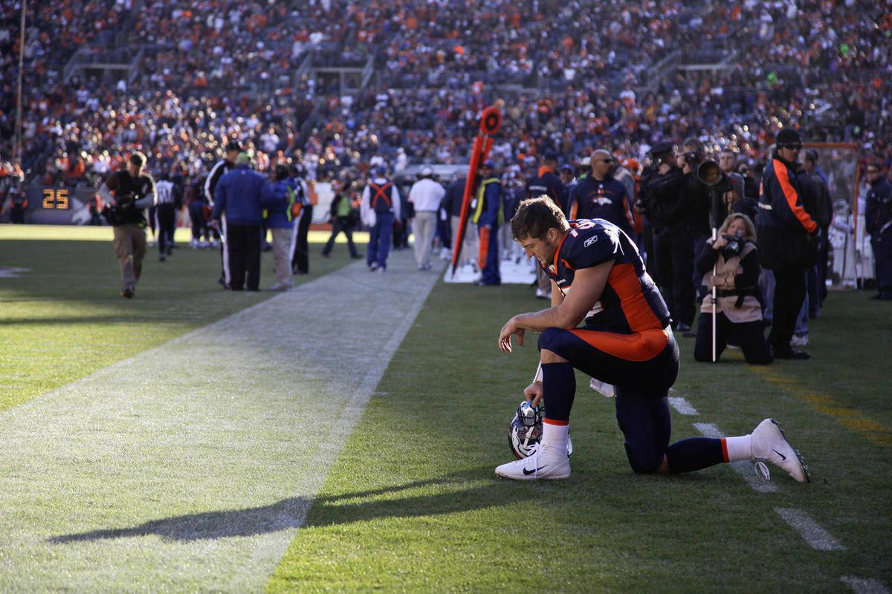

Denver Broncos
Tim Tebow was drafted by the Denver Broncos with the 25th pick in the 2010 NFL Draft. Tebow's first career victory came in his second start on December 26 narrowly defeating the Houston Texans 24–23. However, Tebow finished his rookie season playing sparingly in six games as a back-up primarily coming in on wildcat formation plays before starting the last three games of the Broncos' season. Tebow began the 2011 season as the Denver Broncos' backup quarterback, behind Kyle Orton. After the Broncos started 1–3, Tebow replaced Orton at halftime during a game against the San Diego Chargers in week five, but the Broncos would still go on to lose this game. In the next game, Tebow struggled for three-and-a-half quarters against the Dolphins, but rallied from a 15–0 deficit in the last three minutes to win the game 18–15 in overtime. The Broncos then won 6 of their next 7 games with many of them being comeback wins and narrow victories. On January 8, Denver hosted the Pittsburgh Steelers during the first round of the NFL playoffs. Tebow threw for a career-high 316 yards and two touchdowns, including an 80-yard touchdown to Demaryius Thomas on the first play of overtime, as the Broncos won 29–23. The next week, Tebow completed just nine of 26 passes and took five sacks in a 45–10 defeat at the hands of the New England Patriots which knocked Denver out of the playoffs. After the Broncos signed free agent Peyton Manning, Tebow was traded to the New York Jets on March 21, 2012.